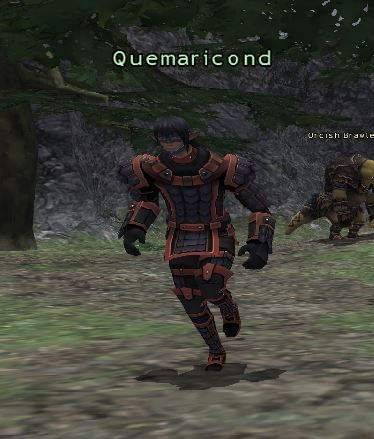

Level 75 reference · Zenith rules


Image source
Type: Mission NPC
Location: Davoi (H-7)
- Notes for Quemaricond
- Wandering NPC, who runs back and forth along the path in H-7.
- Used in Mission
- Infiltrate Davoi
Adapted from Eden Wiki: Quemaricond · Contributors and history · CC BY-SA 4.0. Revision 32205. Layout, links and optional background text adapted for Zenith.